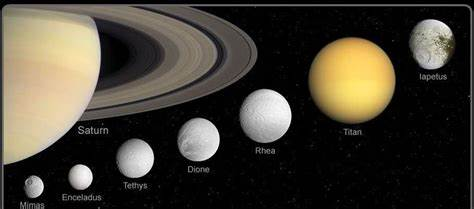

Saturno é um planeta gasoso do Sistema Solar, o segundo maior e o sexto mais próximo do Sol.

A gravidade do planeta Saturno é de cerca de 10,44 m/s².
O planeta possui o maior número de luas entre todos os outros, 82 luas e não tem nenhum satélite sem ser natural em sua orbita.
O raio de Saturno é de aproximadamente 58,2 mil quilômetros, que é equivalente a um pouco mais de 9 vezes o raio da terra.
Saturno em sua atmosfera é praticamente só ar, tendo como composição: 97% de oxigênio, 3% de hélio e 0,05% de metatgno.
Em Saturno só teve uma missão relevante, em 2004: a sonda Cassini, que teve como objetivo passar pelos anéis e mergulhar sobre a atmosfera em busca de mais conhecimento sobre o local; foi bem sucedida, já que houve mais de 450 mil imagens registradas e a descoberta de 6 novas luas.